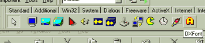
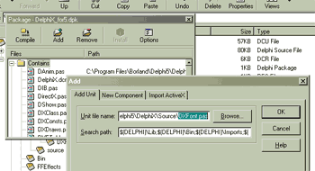
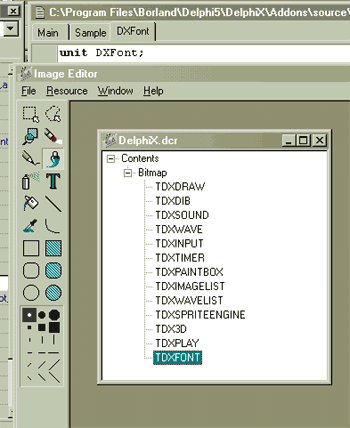
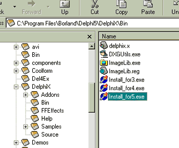

|
Developing an Add-on for DelphiX
Introduction:
I never really hopped on the Object Oriented bandwagon. Back in my heavy-handed C programming days I would compare the speed of straight function to the speed of a C++ function imbedded in an object. Call it once and everything's good, call it 1,000,000 times and it's slower.
Thankfully Delphi and C++ Builder have enlightened me. I'll easily take the loss in speed (if there is a noticeable one anymore) of a VCL object for the ease of use. And when I first discovered DelphiX, it allowed me to code (2D) graphics with the ease of some of the older Turbo Pascal libs like PasKal or GFXFX.
But what I really excited me was the fact that anybody could easily build a DelphiX VCL add-on and stick it right on the component palette. I was sure that within months of the Delphi 4 release of DelphiX that we would see a raft of sweet DelphiX add-ons. Tile map engines, high score keepers, enhanced sprite engines - I imagined that all these were coming down the pike.
But they never came. Don't get me wrong, some plug-ins did happen - notably Dean Ellis (who created a MOD/AVI player called SXMedia) and a host of Direct Pixel access units, but not near as many plug-ins as there are DelphiX users by a long shot.

So I decided to convert some of my Delphi UNITs to VCL plug-ins for DelphiX , and I thought while I was doing that, I might as well do a little tutorial to show how I did it. A little disclaimer first -- I'm not a professional when it comes to component creation, and this probably isn't the best way to develop plug-ins for DelphiX. If you've got a better way - let me know.
The Project:
Convert the turboWrite procedure from turboPixels (a BMP font system) to a VCL component that sits in the DelphiX package and in the DelphiX toolbar.
The Procedure:
The original Procedure looked like this...
procedure turboWrite(DxDrawSurface: TDirectDrawSurface; Imagelist:
TDXImageList; font, text: string; x, y: integer);
var
loop, line, letter, offset, i: integer;
begin
i := Imagelist.items.IndexOf(font); // find font once
offset := Imagelist.items[i].patternwidth;
line := 1;
for loop := 1 to Length(text) do
begin { each letter }
if text[loop] = '|' then // fake a
begin
inc(y, Imagelist.items[i].patternheight + 1);
line := 1;
end
else begin
letter := pos(uppercase(text[loop]), alphabet) - 1;
if letter < 0 then letter := 30;
Imagelist.items[i].draw(DxDrawSurface, x + (offset * line),
y, letter);
inc(line);
end;
end; { loop }
end; { graphics write }
I wanted the user to be able to drop a DXFont control on their form and pick an active DXImageList, type in the font name, and then call a TextOut method. I thought I'd also publish the "offset" value to let the user know how wide each letter of the font is. Maybe down the line I could add a TextOutCenter and/or TextOutAngled methods to enhance the control even more.
The Object:
The object will need DXClass and DXDraws, but not much else...
unit DXFont;
interface
uses
Classes, Controls, SysUtils, DXClass, DXDraws;
Non-visual components are derived from the type TComponent class, so TDXFont is also…
type
TDXFont = class(TComponent)
After that I setup the necessary variables that the user will access from the the DXFont on the form. Delphi conventions state that I should put an 'F' in front of the variable names.
private
FDXImageList: TDXImageList;
FFont: string;
FFontIndex: Integer;
Notice that I can treat a TDXImageList like any other variable. This will cause the object inspector to pull down all available TDXImageLists in my project. Very keen. Here are the rest of the declarations, mostly self-explanatory...
procedure SetFont(const Value: string);
procedure SetFontIndex(const Value: Integer);
public
Offset: integer;
constructor Create(AOwner: TComponent);
destructor Destroy; override;
procedure TextOut(DirectDrawSurface: TDirectDrawSurface;
X, Y: Integer; const Text: string);
published
property Font: string read FFont write SetFont;
property FontIndex: Integer read FFontIndex write SetFontIndex;
property DXImageList: TDXImageList
read FDXImageList write FDXImageList;
end;
Notice that the TextOut procedure takes a TDirectDrawSurface as the first argument, this keeps with how DelphiX functions are called. Every DelphiX function should take a TDirectDrawSurface so the user can decide what surface (primary or surface) to draw on.
The Functions:
There are two ways to set fonts in this object - by name or by index. We'll look at the first one.
procedure TDXFont.SetFont(const Value: string);
begin
FFont := Value;
if FDXImageList <> nil then
begin
FFontIndex := FDXImageList.items.IndexOf(FFont); { find font once }
Offset := FDXImageList.Items[FFontIndex].PatternWidth;
end;
end;
The only big thing here is to make sure that there is a valid FDXImageList before we start using it (if FDXImageList <> nil then...) Notice I can call the IndexOf() function of a TDXImageList to find out what index a name is at.
Now for the TextOut function...
procedure TDXFont.TextOut(DirectDrawSurface: TDirectDrawSurface;
X, Y: Integer; const Text: string);
var
loop, letter: integer;
begin
if FDXImageList = nil then exit;
Offset := FDXImageList.Items[FFontIndex].PatternWidth;
for loop := 1 to Length(text) do
begin
letter := pos(uppercase(text[loop]), Alphabet) - 1;
if letter < 0 then letter := 30;
FDXImageList.items[FFontIndex].Draw(DirectDrawSurface,
x + Offset * loop, y, letter);
end; { loop }
end;
I took a bit of the functionality out of this version (no fake carriage returns), but the basic font drawing is there. Alphabet is a CONST that is setup in the same order that a WinAmp font is laid out in. So, loop through the string, find the index of the letter and draw the pattern of the font.
This routine requires that the PatternWidth and PatternHeight properties be correctly set in the item of the FDXImageList.
Testing:
Before you install the component to the palette, you may want to test it. I edited one of the DelphiX samples and added an instance of DXFont.
type
TMainForm = class(TDXForm)
(…)
DXFont: TDXFont;
(…)
end;
And then created it in the TMainForm.FormCreate event…
procedure TMainForm.FormCreate(Sender: TObject);
begin
(…)
DXFont := TDXFont.Create(Self); // Construct the component
DXFont.DXImageList := ImageList; // Set Imagelist
DXFont.Font := 'yellowtext'; // or DXFont.FontIndex:=0;
(…)
end.
And then tested the object…
DXFont.TextOut(DXDraw.surface, scroll, dxdraw.Height - 100,
scrolly);
dec(scroll);
if scroll < (-length(scrolly) * DXFont.Offset) then scroll := dxdraw.Width;
If everything is OK from here, then we can add it to the component palette.
Installation:
The object should have a Register procedure like this one...
procedure Register;
begin
RegisterComponents('DelphiX', [TDXFont]);
end;
This will put it in the component palette in the 'DelphiX' tab.
I've found that the easiest way to add the source code to DelphiX with as little effort as possible is to add it directly to the DelphiX_for5.dpk file. This is probably not the best/safest way to do it, but it does work (for me) and work well.
*** DISCLAIMER - please backup your files before you do any of this, also these methods are only tested in Delphi 5, I haven't tested any of this on DelphiX for Delphi 4
Copy your source code (in this case DXFont.pas) to your DelphiX/Source directory. Then open the DelphiX_for5.dpk and then click the Add button in the package editor.

Pick the DXFont.pas as the component you want to add. Compile, Save (do not Install) and then exit Delphi.
To put an icon on the DelphiX toolbar you will need to update the DelphiX.dcr file. You can use Delphi's image editor to open DelphiX.dcr...
Add a new 24x24 bitmap to the Conents/Bitmap portion of the tree and name it the same as the component - in this case TDXFont. For some reason everybody likes uppercase letters here. When you are done, save the DCR file and exit ImageEdit. (I'm providing you with an updated DelphiX.dcr in this tutorial that you can use rather than drawing your own icon. Just backup the old DelphiX.dcr and replace it with the updated one.)

Now you are ready to re-install. Find the DelphiX/Bin directory and run the Install_for5.exe to add your new component into the DelphiX Package and re-install DelphiX.

That should be it. Load and run the sample app and look to see if DXFont is in Delphi's DelphiX Tab.
Written by
Michael Wilson
wilson@no2games.com
www.no2games.com
turbo.gamedev.net
|
|
|